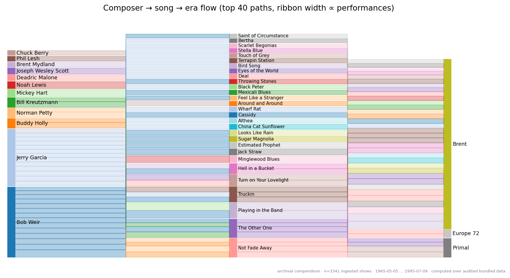

We present a modular, citation-bound data compendium for the Grateful
Dead universe — shows, songs, performances, personnel timelines, venues,
recordings, and reception — and a category-theoretic interpretation of
the performance graph. The work is grounded in the archival reality that
Grateful Dead history is both institutional and participatory: UCSC’s
Grateful Dead Archive and the Internet Archive collection preserve
formal and community records [ucsc_grateful_dead_archive;
internet_archive_lma; internet_archive_gd_collection_policy], while
taping and trading scholarship shows why setlists and recording metadata
are cultural evidence, not merely fan trivia [dead_net_taping_dead;
wallace_cocreation_sound_archive]. The surrounding source dossier also
binds the non-quantitative historical frame – formation and Acid Test
context, Wall of Sound engineering, live recording/liveness scholarship,
Deadhead sociology, studio-era reception, and public recognition – to
checked sources rather than to folklore alone [dead_net_biography;
foundsf_weir_psychedelic_sf; smithsonian_institutionally_dead;
mcintosh_wall_of_sound; brackett_live_dead;
adams_deadhead_social_science; rockhall_grateful_dead;
grammy_lifetime_achievement; kennedy_center_honors_2024]. The compendium
integrates nine primary sources (Setlist.fm [setlistfm_gd],
The SetList Program [setlists_net_program], the Mark Leone
CMU setlist archive [cmu_leone_setlists; noah_truckin_through_time],
GDsets [gdsets_com; gdsets_dead], gdshowsdb
[gdshowsdb; github_topic_gratefuldead], the Internet Archive Live Music
Archive [internet_archive_lma; fifteen_songs_dataset], the Alex Allan /
whitegum lyric finder [whitegum_alex_allan; cmu_leone_lyrics], the
official band site [dead_net_official], and Wikipedia [wikipedia_gd;
wikipedia_discography]) with four reference sources (Britannica
[britannica_gd], the lineup-changes guide [ucr_lineup_changes], Dodd and
Trist’s The Complete Annotated Grateful Dead Lyrics
[dodd_annotated_lyrics], and the Grateful Stats front-end
[grateful_stats]) and secondary corpora and community discussions
[grateful_data_tutorial; jerry_pycia; gd_reviews_corpus;
reddit_data_sets; reddit_lyrics_attribution; reddit_setlist_db;
reddit_spreadsheet_archive]. Each source is parsed by an independently
testable reference module written against the documented record
shape; the committed compendium under data/archival/ is the
dataset reported here (3341 ingested shows (gdshowsdb + truckin
gap-fill; community literature estimates ~2318 canonical concerts), 645
songs, 912 venues, 40757 performance rows). A runtime completeness audit
and figure-validation gate certify referential integrity and
non-degenerate outputs on every pipeline run. Integration is a
deterministic, sort-keyed merge over canonical slugs; registered figures
also emit CSV/JSON data tables, and a first-principles claim ledger
classifies each major result by irreducible input, hard constraint,
assumption, validation artifact, and interpretation limit. Exploratory
repertoire/uncertainty panels are labelled as pattern-discovery rather
than causal inference. We then exhibit four small but real categorical
constructions, situated against transformational and categorical
music-theory precedents [lewin_gmit; padi_category_music_case_study;
popoff_hidden_categories]: a poset category of dates, a discrete
category of shows, a monotone cumulative setlist functor and
lineup functor from dates into sets, and a span representation that
takes each performance to be the apex of a span between its show and its
song. Wide pullbacks over a fixed show recover the show’s setlist; wide
pullbacks over a fixed song recover the song’s performance history. The
active-band roster, by contrast, is a non-monotone presheaf on the date
poset — a categorical formalization of the familiar fact that members
come and go. The artefacts in this paper come from the committed
archival snapshot; all source-ingestion modules are written against the
real source shape so that
scripts/00_fetch_sources.py --online --write-archival
refreshes the full snapshot.
The Grateful Dead performed roughly two and a half thousand concerts between 1965 and 1995. The public record of those concerts — setlists, recordings, ticket stubs, member rosters, composer credits, release histories, and decades of fan commentary — is one of the most extensively documented bodies of live performance in popular-music history. It is also unusually hybrid. UCSC’s Grateful Dead Archive gives the band a formal institutional home [ucsc_grateful_dead_archive], while the Internet Archive collection and Deadhead taping culture preserve the community-built sound archive and its metadata [internet_archive_gd_collection_policy; dead_net_taping_dead; wallace_cocreation_sound_archive]. The record is fragmented across primary databases, archival corpora, reference works, and a long tail of community spreadsheets and forum threads [reddit_data_sets; reddit_setlist_db; reddit_spreadsheet_archive]. This paper introduces The Music Never Stopped: a reproducible, citation-bound compendium that integrates the primary sources into a single schema, exposes them to standard data-analysis machinery, and exhibits a small but genuine category-theoretic structure latent in the performance graph.
We organize the cited landscape into four layers.
Primary setlist sources. Setlist.fm publishes a
crowd-curated, API-backed register of every Grateful Dead show
[setlistfm_gd]. The SetList Program at setlists.net covers
1965–1995 with an interactive interface [setlists_net_program]. The Mark
Leone CMU archive [cmu_leone_setlists], derived from the Jerry Stratton
database, is the ancestor of many community scrapes; Noah Gorstein has
converted the abandoned HTML into an open SQLite database
[noah_truckin_through_time]. GDsets combines setlists with
ticket-stub and stage-pass images [gdsets_com; gdsets_dead]. The
gdshowsdb repository ships a relational schema and a Ruby
gem [gdshowsdb]; the GitHub topic gratefuldead is the
meta-index that links these and other resources
[github_topic_gratefuldead].
Primary lyric and song-attribution sources. Mark
Leone’s lyric index at CMU [cmu_leone_lyrics] points to the Stratton
database via FTP. Alex Allan’s whitegum.com is the
canonical lyric and song finder for every song the Dead played, with
composer/lyricist attribution and per-song performance data
[whitegum_alex_allan]. Dodd and Trist’s The Complete Annotated
Grateful Dead Lyrics supplies the authoritative interpretive and
annotation context for lyric studies [dodd_annotated_lyrics]. We cite it
as an external authority and store only pointer metadata; no lyric text
is bundled. Hunter’s own retrospective account and community discussion
are used only as context for songwriter roles, never as an override of
the structured composer/lyricist fields
[rolling_stone_robert_hunter_interview; reddit_lyrics_attribution].
Personnel, discography, recording, and reception
sources. The official band site lists members and roles
[dead_net_official]. Wikipedia’s Grateful Dead entry [wikipedia_gd] and
discography [wikipedia_discography] anchor the biographical timeline;
Britannica frames the wider cultural context [britannica_gd].
Ultimate Classic Rock’s lineup-changes guide
[ucr_lineup_changes] provides a chronological narrative of personnel
transitions. The Internet Archive’s Live Music Archive supplies
recording metadata for the bulk of the live corpus
[internet_archive_lma], and its Grateful Dead collection policy explains
the special access and metadata posture of those recordings
[internet_archive_gd_collection_policy]. The
fifteen-songs-dataset curates 2617 soundboard recordings of
15 songs for music-information-retrieval research
[fifteen_songs_dataset], while Wang et al.’s setlist-segmentation paper
gives a broader MIR frame for why live setlist identification is
non-trivial [wang_setlist_segmentation]. jerryPycia
provides a Python query library over Dead show data [jerry_pycia]; the
grateful-dead-reviews corpus collects long-form fan reviews
[gd_reviews_corpus]. The gratefulstats.com front-end
aggregates show/tune/venue statistics [grateful_stats]. The
gratefuldata tutorial demonstrates an ETL pipeline using
the Internet Archive together with ASCAP ACE composer data
[grateful_data_tutorial]. The compendium draws composer/lyricist
attributions from these sources and encodes them in
data/archival/songs.json.
Historical, technical, and interpretive context. The supplied enriched bibliography is useful as a discovery map, but the map is not itself evidence. Each durable topic is therefore rebound to checked source families: the official dead.net biography and FoundSF’s Bob Weir oral-history page for formation and Acid Test context [dead_net_biography; foundsf_weir_psychedelic_sf], Smithsonian and UCSC for institutional archive status [smithsonian_institutionally_dead; ucsc_grateful_dead_archive], McIntosh for the Wall of Sound hardware [mcintosh_wall_of_sound], Marshall, JSTOR Daily, Meriwether, Wallace, and the Internet Archive policy page for the tape-trading and sound-archive ecosystem [marshall_bootleg_collectors; jstor_daily_tape_trading; dead_net_taping_dead; wallace_cocreation_sound_archive; internet_archive_gd_collection_policy], Brackett’s Live Dead for liveness and recorded-performance scholarship [brackett_live_dead], Adams and Sardiello for Deadhead sociology [adams_deadhead_social_science], Dodd and Weiner for the bibliographic field map [dodd_weiner_annotated_bibliography], Britannica and Americana Highways for narrow biographical and studio-reception context [britannica_jerry_garcia; americana_highways_workingmans_american_beauty], and official public-recognition sources for later institutional status [rockhall_grateful_dead; grammy_lifetime_achievement; kennedy_center_honors_2024]. Community reconstructions such as touring revenue estimates are cited only as labelled business-history context, not as compendium measurements [grateful_seconds_touring_revenues].
We ship a committed archival compendium under
data/archival/ that drives every analysis and
category-theoretic claim in this paper end-to-end, plus a parser for
each cited source so that refreshing the snapshot is a matter of running
the same code with online flags.
Prior Grateful Dead data efforts are mostly single-source or
single-purpose. Community setlist databases and the gdshowsdb /
truckin-through-time projects [gdshowsdb; noah_truckin_through_time]
assemble the raw show record; aggregators such as Grateful Stats
[grateful_stats] and community spreadsheets and forums
[reddit_setlist_db; reddit_data_sets] surface frequency rankings; and
query libraries such as jerryPycia [jerry_pycia] and the
grateful-data tutorial [grateful_data_tutorial] expose one
source programmatically. Archive and popular-music studies add a second
frame: the Dead’s sound record is co-produced by band, archive, tapers,
uploaders, and curators rather than handed down by a single authority
[wallace_cocreation_sound_archive; dead_net_taping_dead;
internet_archive_gd_collection_policy; brackett_live_dead]. Sociological
work on Deadheads, bibliographic scholarship, and tape-trader studies
explain why this record is also a community institution rather than
simply a discography [adams_deadhead_social_science;
dodd_weiner_annotated_bibliography; marshall_bootleg_collectors;
jstor_daily_tape_trading].
This compendium differs on two axes. It is integration-first: primary sources are reconciled on canonical slugs into one immutable, citation-bound schema with a runtime honesty boundary and completeness/figure-validation probes. It is also structure-first: the performance record is read through small but mechanically checked categorical constructions (functors, spans, colimits, a date-poset Yoneda statement) rather than treated only as a frequency table. The music-theory lineage is Lewin’s transformational shift from static objects to relations and transformations [lewin_gmit], with newer categorical music work showing how such networks can be formalized diagrammatically [padi_category_music_case_study; popoff_hidden_categories]. Our contribution is a concrete, reproducible instantiation on a real performance corpus, with every quantitative or categorical claim bound to code.
We do not bundle lyric text — full lyrics are copyrighted. The
compendium stores songs as titled records with composer and lyricist
attribution; the semantic layer (motifs, themes, annotations) is read
against external indices such as Alex Allan’s finder and Dodd’s
annotated lyrics [whitegum_alex_allan; dodd_annotated_lyrics]. We do not
bundle audio. The audio-enriched category in §3 is a structural
abstraction over similarity weights; concrete weights are produced by an
external pipeline against the fifteen-songs-dataset
[fifteen_songs_dataset].
The compendium primitive is a small frozen-dataclass schema. Every
entity validates its inputs in __post_init__; every primary
key is computed by a canonical-slug function so that joins across
sources reduce to dictionary lookups. The nine entity types are
Show, Venue, Person,
Song, Performance, Recording,
Release, Citation, and Lineup;
their fields and invariants are documented in
src/models.py.
Two canonical-slug rules suffice for source-agnostic identity:
YYYY-MM-DD@<venue-slug>.These deterministic functions absorb the cross-source-naming variance that would otherwise require a manual alias table.
The field-level contract for the entities that carry the quantitative
claims; the authoritative definition with all invariants is
src/models.py.
| Entity | Key | Principal fields | Notes |
|---|---|---|---|
Show |
slug = YYYY-MM-DD@venue |
date, venue_slug |
one concert; venue_slug is a foreign key into
Venue |
Venue |
slug |
name, city, state_or_region,
country |
geo coordinates live in a venue_geo sidecar |
Song |
slug (slug of title) |
title, composers, lyricists,
first_performed, last_performed,
aliases |
catalogue entry; need not have been performed |
Performance |
(show, song, set, position) |
show_slug, song_slug,
set_number, position, segue_into,
notes |
the apex of the show\(\leftrightarrow\)song span |
Person |
slug |
intervals = (start, end, role) tuples |
open interval (end=None) means still active |
Recording |
slug |
show_slug (or date), source_type |
Internet Archive + curated rows |
Review |
— | show_slug, kind, sentiment
\(\in[-1,1]\),
source_url |
positive sentiment requires a source URL (honesty check) |
Citation |
key |
kind, url |
bibliography + references.bib |
LyricPointer |
song_slug |
url, themes, lyricist |
URL metadata only — never lyric text |
Each cited source has its own reference parser at
src/sources/<name>.py. Every parser exposes a single
parse function whose input is a record in the documented
upstream shape (JSON payload for API sources, line-oriented text block
for HTML-derived archives, dict-of-tables for relational dumps) and
whose output is in the canonical schema. The committed snapshot in
data/archival/ is built from gdshowsdb YAML,
truckin-through-time SQLite gap-fill, and curated overlays. Live HTTP
fetchers are implemented in src/ingest/ and invoked by
scripts/00_fetch_sources.py --online --archival-max. We
support nine ingestion paths corresponding to the survey above:
| Source | Module | Citation |
|---|---|---|
| Setlist.fm | sources/setlistfm.py |
[setlistfm_gd] |
| The SetList Program | sources/setlist_program.py |
[setlists_net_program] |
| CMU / Mark Leone | sources/cmu_setlists.py |
[cmu_leone_setlists; noah_truckin_through_time] |
| GDsets | sources/gdsets.py |
[gdsets_com; gdsets_dead] |
| gdshowsdb | sources/gdshowsdb.py |
[gdshowsdb] |
| Internet Archive LMA | sources/internet_archive.py |
[internet_archive_lma; fifteen_songs_dataset] |
| Alex Allan / whitegum | sources/alex_allan.py |
[whitegum_alex_allan] |
| dead.net (official) | sources/dead_net.py |
[dead_net_official] |
| Wikipedia | sources/wikipedia.py |
[wikipedia_gd; wikipedia_discography] |
The Internet Archive path is treated as recording metadata rather than as an audio-ingestion license. The Grateful Dead collection has its own access and upload posture, and its item metadata can include source, taper, and transfer fields that are valuable without bundling audio files [internet_archive_gd_collection_policy]. Likewise, the lyric layer records URLs, lyricist attribution, and curated theme labels only; Dodd and Trist’s annotated lyrics are cited as external interpretive context, not ingested text [dodd_annotated_lyrics].
Historical context is deliberately stored as citations and prose, not
as performance data. The enriched-bibliography pass added a fourth
source class: checked contextual anchors for formation, public honors,
sound engineering, tape-trading, Deadhead sociology, studio-era
reception, bibliography, and live-recording scholarship
[dead_net_biography; foundsf_weir_psychedelic_sf;
smithsonian_institutionally_dead; mcintosh_wall_of_sound;
marshall_bootleg_collectors; brackett_live_dead;
adams_deadhead_social_science; dodd_weiner_annotated_bibliography;
americana_highways_workingmans_american_beauty;
kennedy_center_honors_2024]. These sources can explain why a date
matters, but they do not create or override Show,
Performance, Recording, or
Release rows. The quality tiers are explicit:
No current-person, revenue, lyric, or audio claim from the source dossier is allowed into the quantitative layer unless it is independently sourced and represented in the schema. The same rule applies to citation placement: contextual sources may explain the provenance of a figure or timeline label, but the plotted statistics must still come from generated reports or exported figure data.
The integration layer at src/integration/reconcile.py
performs a deterministic merge. The merge rule is pointwise per entity
type — venues join on slug, songs join on slug with union of
composer/lyricist tuples and min/max of first/last-performed dates,
people join on slug with union of intervals, performances join on the
four-tuple (show, song, set, pos). The resulting
Compendium is immutable and byte-stable across runs.
data/archival/)The published dataset lives under data/archival/ (3341
ingested shows (gdshowsdb + truckin gap-fill; community literature
estimates ~2318 canonical concerts), 645 songs, 912 venues, 40757
performance rows). It merges gdshowsdb YAML, truckin-through-time
gap-fill, Internet Archive LMA metadata, bibliography citations,
maximinus reviews, CMU lyric pointers, and curated personnel/releases
overlays. GRATEFUL_DATA_TIER=archival selects this load
path (see src/tier.py).
The analysis layer at src/analysis/ computes descriptive
statistics, co-occurrence and Markov transitions, era and personnel
timelines, geo and tour aggregates, lyric-theme frequencies from
pointers, review sentiment, segue extraction, eigenvector centrality,
stationary distributions, and bustout (recurrence-gap) metrics — each as
a pure function of the Compendium.
Distributional statistics are first-class objects rather than
incidental plot annotations. src/analysis/distributions.py
computes show-level performance-row summaries, robust percentiles, and
simple concentration statistics (Gini, top-decile share, and the number
of ranked items needed to cover 50% and 80% of rows). The method is
descriptive only: it reports skew and concentration in the archival
record without treating unequal song frequency, venue recurrence, or
setlist length as causal effects. Show-level performance distributions
include empty-setlist shows, because excluding them would make the
setlist-completeness limitation invisible.
The same module now adds fixed-seed item-level bootstrap intervals for the song and venue concentration statistics. These intervals are reported as exploratory uncertainty bands around descriptive metrics: the resampling unit is the observed item count (a song’s performance count or a venue’s show count), not a claim about unobserved concerts, fan preference, or musical causation.
Exploratory repertoire modeling lives in
src/analysis/exploratory.py. It constructs an era-by-song
performance-count matrix with generic segment markers excluded, applies
a centered SVD to log-count profiles, and clusters the two-dimensional
coordinates with deterministic k-means-style updates and stable
tie-breaks. The output is explicitly labelled as pattern discovery: it
helps inspect era-weighted repertoire profiles, but it is not
predictive, causal, or a definitive musicological taxonomy.
The transition analysis is intentionally modest: a first-order chain
over adjacent within-show performance rows plus an explicit segue graph
over source-marked segue_into edges. MIR work on
full-concert setlist identification shows why audio-level segmentation
is a separate, harder task that would require different evidence and
different artifacts [wang_setlist_segmentation]. The current analysis
report also includes a deterministic transition-sensitivity layer:
predecessor-support thresholds are summarized with and without generic
segment markers, and era-specific transition summaries are reported as
descriptive diagnostics. These sensitivity rows do not rerun the
permutation screen and do not create predictive claims; they show how
fragile or stable the visible transition surface is under ordinary
presentation choices.
Repertoire concentration is likewise reported with sensitivity context. Beyond the fixed-seed bootstrap intervals, the analysis report summarizes alternate top-N cuts for performance share, within-cut Gini, top-decile concentration, and era coverage. This keeps the manuscript from treating a single top-song cutoff or heatmap width as if it were an intrinsic property of the archive.
The methods layer now includes a claim-governance pass in
src/analysis/first_principles.py. This is not a statistical
model; it is a reproducibility device. The ledger deconstructs each
major manuscript claim family into five irreducible parts: the data
input, the hard constraint that must hold, the softer modeling or
presentation choice, the assumption that remains after the hard
constraint is enforced, and the interpretation limit. The current build
classifies 12 claim families across 6 claim classes, naming 12 hard
constraints, 12 assumptions, and 12 validation artifacts.
This layer prevents the common failure mode in computational
humanities projects: a polished visualization silently upgrades a
descriptive pattern into an explanatory claim. For example, repertoire
rankings are permitted to say what was counted after segment-marker
exclusion; they are not permitted to say what the band preferred. The
transition matrix is permitted to summarize adjacent setlist rows; it is
not permitted to infer musical causality. The historical-context
timeline is permitted to orient computed show counts against cited
milestones; it is not permitted to create or modify a Show
row. scripts/19_first_principles_review.py serializes the
ledger as output/reports/first_principles_review.json and
output/reports/first_principles_claims.csv. Each row also
names the manuscript section, figure filename, report key, governing
test file, and claim status, so caveats can be routed through the ledger
instead of repeated as free-floating prose.
Source provenance is exported as a sidecar rather than written into
the frozen entity dataclasses. src/provenance.py records
the source-layer families behind shows, songs, venues, performances,
recordings, releases, citations, lyric pointers, reviews, personnel
rows, and computed segue edges. The records are deliberately
conservative: they identify ingest or computation layers, not hidden
row-level certainty that the schema does not store.
The external-media layer is pointer-only.
src/external_manifests.py writes audio and lyric URL
manifests with compact metadata, hashes where available, and explicit
policy labels. It rejects bundled audio, local paths, lyric text,
transcripts, excerpts, waveforms, and derived text fields. It also
writes a small pipeline contract that names allowed inputs and outputs
for future external audio-feature and lyric-annotation workflows. This
keeps future audio- or lyric-analysis work reproducible without changing
the present copyright and data-boundary claims.
Visualization lives in src/viz/: reusable panel builders
(panels.py), a figure registry (figures.py),
mosaic composition (compose.py), alluvial flows
(alluvial.py), and non-blank figure validation
(validate.py). HTML dashboards and entity markdown pages
live in src/reporting/.
The figure set is deliberately mixed: frequency and concentration views use ranked bars or cumulative-share curves; distributions use histograms with median and high-percentile reference lines; temporal activity uses bars/lines; co-occurrence and transition matrices use heatmaps; geography uses a size-encoded scatter map; and the composer/song/era view uses an alluvial diagram. Pie charts are avoided because the same categorical comparisons are more legible as sorted bars with counts and shares.
The contextual-source distinction also shapes the visual layer. The
new historical-context timeline overlays a small set of cited milestones
on computed show counts; it is a visual orientation aid, not an ingest
product. The figure registry therefore carries its title, screen-reader
alt text, caption hint, data source, statistic, exclusion rule, claim
class, draw function, and figure-data exporter together. The same
metadata feeds the dashboard, raw figure-data index, publication
validator, and manuscript captions, so prose claims and plotted
statistics are auditable from one registry. A plain static explorer
under output/explorer/ reuses exported show, song, venue,
segue, figure, provenance, and claim-evidence data for local filtering
without adding a frontend framework. The explorer supports URL-state
filters, sortable table headers, related links, and filtered CSV
download, so readers can inspect subsets without depending on a
server.
Runtime probes certify manuscript claims beyond unit tests:
src/audit.py::audit_completeness — referential
integrity (tier-aware);src/export.py — full raw CSV/JSON export of every
entity type;src/analysis/first_principles.py — first-principles
claim/evidence ledger for hard constraints, assumptions, validation
artifacts, and limits;src/provenance.py — sidecar provenance CSV/JSON for
entity/source-layer review;src/external_manifests.py — pointer-only external
audio/lyric manifests with protected-content rejection;src/viz/datasets.py — raw CSV/JSON export of 34
registered figure datasets;src/viz/validate.py::validate_figures — every expected
PNG exists and is non-degenerate.Category theory gives us a vocabulary for structure that survives change of representation. The four constructions below identify structure that does not depend on which source we drew the data from or on which subset of the corpus we are looking at: they are stable in exactly the sense category theory was built to express.
The point is not to claim that setlists require category theory. The point is to make the data model’s relations explicit. Lewin’s transformational theory famously shifts attention from musical objects to transformations among objects [lewin_gmit]; NIST’s music case study shows category theory used as an ontology and integration framework for musical knowledge [padi_category_music_case_study]; and recent work on hidden categories in Lewinian GIS and Klumpenhouwer networks makes the categorical connection literal [popoff_hidden_categories]. Those works license the kind of move being made here – a shift from objects to relations and an ontology whose diagrams can be checked – but they do not make the Grateful Dead corpus categorically interesting by association. Our use is narrower: shows, songs, dates, and performances form a small relational system whose laws can be checked directly against the compendium.
Scope of these claims. \(\mathbf{Date}\) is a thin poset category, so associativity holds automatically and the Yoneda statement is the elementary poset case rather than a deep theorem. We therefore present the mechanized checks below — law sampling, the colimit universal property, the Yoneda bijection, the span/functor commutation — as encoding and sanity checks: they verify that the schema faithfully instantiates these categorical structures and that the corresponding properties hold on the real corpus (each with a negative control that fails on broken input), not that a non-trivial mathematical theorem about the Grateful Dead has been proved. Their value is that the data model is demonstrably the categorical object we claim it is — which is what licenses the representation-independent reading — not mathematical novelty or a claim that categorical music theory explains the band’s musical choices.
Let \(\mathbf{Date}\) be the small
category whose objects are the distinct performance dates in the
compendium and whose morphisms \(d_1 \to
d_2\) exist iff \(d_1 \le d_2\).
\(\mathbf{Date}\) is a thin poset
category; identities and associativity hold by construction. Let \(\mathbf{Show}\) be the discrete category
whose objects are the show slugs. Both categories’ laws are checked
mechanically in
src/cattheory/categories.py::Category.check_laws. Small
categories are verified exhaustively; at archival scale the \(\mathbf{Date}\) poset has 2312 objects, so
an exhaustive associativity sweep is intractable. The checker instead
verifies every identity and samples a fixed (seeded) set of random
composable triples, checking both associativity and
closure (that each sampled composite arrow is present
in the table). Because the \(\mathbf{Date}\) compose is
order-preserving string composition, its associativity holds by
construction; the data-reachable defect is a non-transitively-closed
arrow table, which the sampled closure check catches with high
probability. This is a regression guard — the laws hold by
construction; the check is a sampled probe of systematic corruption, not
a proof — paired with a negative control that fails on a deliberately
non-closed table.
Define \(F_{\text{setlist}} : \mathbf{Date}
\to \mathbf{Set}\) by sending each date \(d\) to the set of song slugs ever performed
on or before \(d\), and each arrow
\(d_1 \le d_2\) to the inclusion of
sets. \(F_{\text{setlist}}\) is a
covariant functor because the cumulative-songs set is monotone in \(d\).
cattheory/functors.py::setlist_functor returns the explicit
representation; is_monotone checks the functor law on the
compendium.
Define \(F_{\text{lineup}} : \mathbf{Date} \to \mathbf{Set}\) by sending each date \(d\) to the set of personnel who have been in the band on or before \(d\), and each arrow to the inclusion. \(F_{\text{lineup}}\) is again a monotone covariant functor.
The active-roster assignment \(P_{\text{active}}(d) = \{p \mid p\ \text{is
in the band on}\ d\}\) is also natural, but it is not
monotone: when Pigpen leaves the band in 1972 [ucr_lineup_changes;
dead_net_official], the active set shrinks, so \(P_{\text{active}}\) fails the
covariant-functor law. It is, however, a perfectly good presheaf:
contravariantly, the “forgetting” arrow \(d_2
\to d_1\) can be sent to the restriction of the active set. We
make both views available (setlist_functor,
lineup_functor, active_lineup_presheaf) and
check that one is monotone and the other is not. The categorical content
matches the historical fact: cumulative views grow; instantaneous views
oscillate.
For each performance \(p = (\text{show}, \text{song}, \text{set}, \text{pos})\), define a (2-leg) span:
\[\mathrm{Show}\ \xleftarrow{\pi_{\text{show}}}\ p\ \xrightarrow{\pi_{\text{song}}}\ \mathrm{Song}.\]
In cattheory/spans.py, PerformanceSpan
exposes the two projections explicitly. The fiber of \(\pi_{\text{show}}\) over a fixed show \(s\) — the preimage \(\pi_{\text{show}}^{-1}(s)\), equivalently
the wide pullback of all spans pinned on the left to \(s\) in the discrete fibration sense —
recovers the show’s setlist in canonical order. Symmetrically, the fiber
of \(\pi_{\text{song}}\) over a fixed
song recovers the song’s performance history. We use “fiber / multi-leg
span” rather than “wide pullback” in the strict universal-property
sense; the discrete-base setting collapses the distinction. This
construction shows that the performance primitive is not a derived field
of the schema; it is the apex linking shows and songs, and the
two projections commute by definition with the cumulative setlist
functor.
The categorical content is small but real:
Following the precedent of the fifteen-songs-dataset
[fifteen_songs_dataset] and the broader MIR problem of identifying and
segmenting live concert songs [wang_setlist_segmentation], pairs of
performances of the same song could carry a similarity weight
in \([0, 1]\). The category whose
objects are performances and whose hom-objects are these weights is
enriched over the unit-interval monoid \(([0,
1], \max, 0)\).
cattheory/enriched.py::AudioEnrichedHom captures the
abstraction: the constructor enforces the weight constraint and the
same-song precondition; identity homs at weight \(1.0\) behave as required in the
enrichment.
We do not bundle audio. The enrichment is structural; concrete
weights are expected to come from a downstream pipeline against the
fifteen-songs-dataset.
cattheory/colimits.py exposes two constructions: the
binary coproduct of two Compendium fragments, which by the
reconciliation rules collapses into the disjoint-union compendium, and
the colimit of the cumulative setlist functor on the compendium, which
equals the set of all songs ever performed in the bundled data.
Crucially, the colimit check verifies the universal property,
not merely that each \(F(d)\) is a
subset of the union: colimit_cone_factors confirms that a
strictly larger cocone vertex admits the unique mediating map and — as a
built-in negative control — that a vertex strictly smaller than
\(\bigcup F\) fails to receive the
colimit. A check that only asserted \(F(d)
\subseteq \bigcup F\) would be vacuous (true for any family);
requiring the negative control to fail is what gives it teeth. The test
test_coproduct_disjoint_union additionally asserts that
splitting the shows and re-merging via the coproduct returns the
original show set — a structural reproducibility witness for the
reconciliation layer itself.
The cardinality assignment η_d = |F(d)| is a natural
transformation F ⟹ \mathrm{Card} \circ F for any monotone
covariant functor F : \mathbf{Date} \to \mathbf{Set}. The
naturality square reduces (on this thin poset) to
|F(d_1)| \le |F(d_2)| whenever d_1 \le d_2.
src/cattheory/natural.py exposes
naturality_square_holds and the two concrete instances
setlist_cardinality_transformation,
lineup_cardinality_transformation; both pass on the
compendium and both are tested against a hand-crafted broken-cardinality
functor as a negative control. This is small but real categorical
machinery — it lets us reason about several functors in
parallel through a single shared transformation.
In the discrete show category the Yoneda embedding collapses
to an equality indicator and is a near-tautology. The non-degenerate
statement lives over the \(\mathbf{Date}\) poset. For
a fixed date \(d\) the covariant
representable \(\mathrm{Hom}(d, -)\)
sends each date \(e\) to a singleton
when \(d \le e\) and to \(\varnothing\) otherwise. A natural
transformation \(\mathrm{Hom}(d, -)
\Rightarrow F_{\text{setlist}}\) assigns the arrow \(d \to e\) an element of \(F_{\text{setlist}}(e)\), and naturality
with the inclusion legs forces a single element that must lie in \(F_{\text{setlist}}(e)\) for every
\(e \ge d\). Because the setlist
functor is monotone, that condition holds exactly for the elements of
\(F_{\text{setlist}}(d)\), giving the
Yoneda bijection \(\mathrm{Nat}(\mathrm{Hom}(d, -),
F_{\text{setlist}}) \cong F_{\text{setlist}}(d)\): the songs
played by date \(d\) are the natural
transformations into the setlist functor.
cattheory/yoneda.py::yoneda_lemma_holds_for_setlist checks
this on the corpus, and count_yoneda_naturals has a
negative control — on a non-monotone functor an element that later drops
out is correctly rejected and the bijection fails.
The payoff is that the question “what songs were played when,
by whom?” decomposes as a fibered relation in the compendium
category: the span projections commute with the cumulative setlist
functor, and the fiber over a fixed show date gives back exactly that
show’s setlist for exactly that lineup. This is not asserted but
checked —
cattheory/spans.py::projections_commute_with_setlist_functor
verifies, over the whole corpus, that the union of show-fibers up to
each date equals the setlist functor’s value there. The compendium
primitive is the apex of the span, not a derived join — which is what
the categorical reading makes explicit, and what allows seamless
extension to any other performance corpus with the same shape.
All numbers in this section are computed at build time from the
committed archival snapshot (data/archival/). Descriptive
statistics and category-theoretic checks are serialized to
output/reports/analysis_report.json and
output/reports/category_theory_report.json; claim
boundaries are serialized to
output/reports/first_principles_review.json; referential
completeness is certified by
output/reports/completeness_report.json (zero dangling
references on hard relations; 3341 shows with 40757 performance rows;
venue geo coverage at archival scale); and every rendered figure is
validated for existence and non-degeneracy in
output/reports/figure_validation.json. Figures are
generated by the registry in src/viz/figures.py and
orchestrated through scripts/04_figures.py,
05_extended_figures.py, 08_more_figures.py,
06_mosaic.py, and 10_alluvial.py. Figure
titles, alt-text hints, dashboard labels, caption metadata, and
validation filenames are centralized in the same registry so the
prose-facing visual documentation and the executable render target do
not drift apart. The manuscript captions below use a common evidence
pattern: data source, statistic, exclusion rule, and claim class.
The active build spans 3341 ingested shows from
1965-05-05 through 1995-07-09 (3341 ingested shows (gdshowsdb + truckin
gap-fill; community literature estimates ~2318 canonical concerts), 645
songs, 912 venues, 40757 performance rows; community literature cites
~2318 canonical concerts). The completeness audit confirms: every show
resolves to a venue; every performance row resolves to a song; every
venue in the compendium has geo coordinates; and no review, recording,
or citation row dangles on hard relations. Importantly,
is_complete is a referential claim — zero
unresolved references on those hard relations — and explicitly NOT a
claim that every show has a setlist: 282 of the 3341 catalogued shows
have an empty setlist in gdshowsdb. These are surfaced as a pinned count
(n_shows_without_performances in the report, bound by a
ground-truth test) and reported as scope, not folded into the
completeness gate. The completeness claims describe the ingested
snapshot; they are not a claim that every optional layer (reviews, lyric
text, exhaustive segue markup) is exhaustive.
| Layer | Count | Notes |
|---|---|---|
| Personnel | 14 | Intervals span 1965–1995 (curated) |
| Songs | 645 | Composer/lyricist attribution where known |
| Lyric pointers | 548 | URL metadata only (no lyric text) |
| Venues | 912 | Geo sidecar at 100% venue coverage |
| Shows | 3341 | gdshowsdb catalog; some setlists empty |
| Performances | 40757 | Ordered set/position rows |
| Recordings | 7122 | Internet Archive + curated rows |
| Releases | 259 | Wikipedia discography merge at archival tier |
| Reviews | 1888 | maximinus corpus + curated exemplar rows |
| Citations | 139 | Bibliography markdown + references.bib |
The per-year distribution covers the band’s entire active career; venue concentration in the Bay Area and major halls reflects the underlying gdshowsdb catalog rather than a hand-picked slice. Recording and archive rows should be read in the context of the Dead’s mixed institutional/community record: UCSC preserves the formal archive, while the Internet Archive and taping/trading culture preserve circulating performance metadata [ucsc_grateful_dead_archive; internet_archive_gd_collection_policy; dead_net_taping_dead; wallace_cocreation_sound_archive].
The compendium is highly skewed, so the manuscript reports medians, percentiles, and concentration measures alongside top-line means. Figure \(\ref{fig:performance_distribution}\) shows performance rows per show, including the 282 empty-setlist shows already surfaced by the completeness audit. The median show carries 17 performance rows, the mean is 12.2, the 90th percentile is 24, and the maximum observed row count is 37. These are setlist-row counts, not audio durations or claims about musical density.
Figure \(\ref{fig:repertoire_concentration}\) makes the repertoire skew explicit. Generic segment markers are excluded, matching the top-song ranking. The song-performance Gini coefficient is 0.74; the top decile of songs accounts for 50.61% of non-segment performance rows. The first 44 ranked songs (9.89% of ranked songs) account for half of those rows, and the first 93 songs (20.9%) account for 80%. This is a descriptive Pareto view of rotation intensity, not a claim that the remaining catalogue was unimportant.

Figure \(\ref{fig:repertoire_topn_sensitivity}\) checks whether the top-song cutoff changes the repertoire story. The exported rows compare top-N cuts 25, 50, 100, 200 over the same non-segment performance table; the largest displayed cut, N=200, accounts for 97.32% of non-segment performance rows. The era band shows that top-song coverage is not uniform across periods, so the top-song panels are summaries of the visible rotation rather than a complete description of each era.

Figure \(\ref{fig:venue_concentration}\) applies the same concentration lens to venues. The venue-show Gini coefficient is 0.59, with the top decile of venue slugs accounting for 51.81% of show rows. The first 84 ranked venues (9.21% of venue slugs) account for half of the show rows, while 345 venues (37.83%) account for 80%. Because venue slugs remain source-derived and conservative aliasing is reported separately, this figure should be read as concentration over the bundled venue table, not as a fully disambiguated venue-history census.

Figure \(\ref{fig:concentration_uncertainty}\) adds the bootstrap layer behind these concentration claims. For song-performance concentration, the Gini point estimate 0.738 has a fixed-seed 95% interval [0.713, 0.759], and the song top-decile share estimate 50.61% has interval [45.947, 55.041]%. For venue-show concentration, the Gini interval is [0.555, 0.617], and the venue top-decile share interval is [47.693, 55.282]%. These intervals are item-level resampling diagnostics for the observed archive, not uncertainty about an unobserved causal data-generating process.

The exploratory repertoire layer asks a different question: if each top song is represented by its era-by-era performance-count profile, what structure is visible without adding audio features, lyric text, or causal claims? Figure \(\ref{fig:repertoire_embedding}\) embeds the top 80 non-segment songs into two centered SVD components, retaining 48.11% and 28.91% of the log-profile variance in the first two displayed components, then assigns 5 deterministic clusters. The cluster summary is intentionally compact: C0: 10 songs, Brent dominant; C1: 16 songs, Brent dominant; C2: 13 songs, Brent dominant; C3: 15 songs, Brent dominant; C4: 26 songs, Brent dominant. This should be read as a diagnostic map of era-weighted profiles, not as a discovered set of song genres.

Figure \(\ref{fig:era_repertoire_heatmap}\) gives
the matrix view behind the embedding. Each cell is the share of that
era’s non-segment performance rows assigned to the song, so vertical
comparisons within an era are meaningful; raw row counts remain
available in output/data/figures/. This heatmap is the more
conservative companion to the SVD scatter because it exposes the
normalization directly.

Figure \(\ref{fig:shows_per_year}\) plots the dual-axis career arc: distinct shows per calendar year (bars) and total performance rows (line). The shape matches the familiar three-act narrative in the standard references [wikipedia_gd; britannica_gd; ucsc_grateful_dead_archive]: rapid build-out in 1969–1972, mid-70s consolidation, and sustained late-period touring with peaks in 1977 and 1989–1990.

Figure \(\ref{fig:context_timeline}\) adds a deliberately separate contextual overlay. The bars are the same computed show counts; the labels are cited historical waypoints from the source dossier: formation and Acid Test context, the live-recording turn around Live/Dead, the 1970 studio-songwriting pivot, the 1974 Wall of Sound, the formal taper-section era, the late-1980s mainstream breakthrough, and the 1995 endpoint [dead_net_biography; foundsf_weir_psychedelic_sf; smithsonian_institutionally_dead; mcintosh_wall_of_sound; dead_net_taping_dead; brackett_live_dead; americana_highways_workingmans_american_beauty; britannica_jerry_garcia]. The labels are not ingested rows and do not affect the counts.

playing_in_the_band'' leads the archival compendium with 752 performance rows, followed bynot_fade_away’’
(666) and ``the_other_one’’ (664). Figure \(\ref{fig:top_songs}\) ranks the top 15; the
ordering aligns qualitatively with community aggregates [grateful_stats;
reddit_setlist_db].
This ranking is a repertoire ranking: it deliberately
excludes the generic structural segments drums'',space’‘,
jam'',tuning’‘, and
feedback'', which are not compositions but recurring set segments. Counted as raw slugs they would dominate the corpus —drums’’
and
space'' are in fact the two highest-count performance slugs overall — so including them would make the headline ranking true-of-the-data but misleading-as-music. Their counts are reported separately rather than discarded (seesrc/analysis/markers.pyand thesegment_marker_countsfield ofanalysis_report.json); named improvisational pieces such asSpanish
Jam’’ are catalogued songs and are not treated as generic
markers. Of the 645 catalogued songs, 445 enter the performance record
(69.42% catalogue coverage) and 196 are catalogued but never performed
in the ingested snapshot.

Figure \(\ref{fig:cooccurrence}\)
restricts the song–song co-occurrence matrix to the 25 most-played
titles. High off-diagonal mass marks pairs that share shows frequently —
including segue-adjacent pairs such as
Scarlet Begonias'' /Fire on the Mountain’’ when both appear
in the same setlist block. This is a setlist-level relation; audio-level
similarity and boundary estimation remain outside scope and would
require the kind of signal pipeline described in MIR
setlist-segmentation work [wang_setlist_segmentation].

A first-order Markov model fit on within-show song order (see
src/analysis/transitions.py) yields the sub-block in Figure
\(\ref{fig:transitions}\). The
manuscript-ready matrix excludes generic segment markers so the main
panel is a song-to-song repertoire view; the sensitivity panel below
reports what changes when markers are included. Chains such as
Help on the Way'' $\to$Slipknot!’’ \(\to\) ``Franklin’s Tower’’ appear as
high-probability transitions when those titles co-occur in the
compendium setlists.

Figure \(\ref{fig:transition_sensitivity}\) gives
the support-threshold audit for the transition surface. It uses the
deterministic report rows in
analysis_report.json::transition_sensitivity and evaluates
predecessor support thresholds 1, 5, 10, 20, 50 with markers included
and excluded. This is the guardrail against treating one-observation
probabilities as stable structure.

The stationary distribution (Figure \(\ref{fig:stationary}\)) and association centrality (Figure \(\ref{fig:centrality}\)) provide complementary views: the former summarizes long-run Markov mass; the latter weights songs that bridge many co-occurring pairs in the show graph. Centrality is computed on the adjacency rather than the raw co-occurrence counts. This is a deliberate modeling choice, not a uniquely correct one: on raw counts, eigenvector centrality largely re-derives raw play frequency (a song played in hundreds of shows co-occurs with almost everything), so the association normalization reduces that volume bias and surfaces songs that bridge many pairs rather than songs that were simply played often.


Figure \(\ref{fig:functor_card}\) plots cumulative setlist and lineup functor cardinalities \(|F_{\text{setlist}}(d)|\) and \(|F_{\text{lineup}}(d)|\) along the chronological show index. Both are monotone non-decreasing on the compendium tier, as required. The active-roster presheaf \(P_{\text{active}}\) (not shown in this single panel) is intentionally non-monotone: Pigpen’s 1972 departure [ucr_lineup_changes; dead_net_official] and Brent Mydland’s 1990 death produce expected dips in instantaneous roster size while cumulative lineup size continues to grow.

The category-theory report records 40757 performance spans,
cumulative setlist cardinality 449 at the terminal date, cumulative
lineup cardinality 14, and passing Category.check_laws for
both \(\mathbf{Date}\) and \(\mathbf{Show}\).
Figure \(\ref{fig:composer}\) contrasts songs-written counts with performance-weighted attribution, exposing the familiar asymmetry between prolific Garcia/Hunter writing and high-performance-weight Weir/Barlow closers. Figure \(\ref{fig:era_density}\) shows show density by year and month; Figure \(\ref{fig:gantt}\) is a Gantt chart of the 15 personnel intervals in the current build.


Figure \(\ref{fig:shows_by_era}\)
aggregates shows into the six era windows used throughout
src/analysis/eras.py; Figure \(\ref{fig:lineup_diversity}\) tracks active
lineup size over time.


The archival compendium bundles 1888 show-level reviews (including the maximinus corpus at archival tier plus 12 curated exemplar rows); Figure \(\ref{fig:sentiment}\) reports mean sentiment by kind. Figure \(\ref{fig:citations}\) and Figure \(\ref{fig:recordings}\) summarize the 139 bibliographic citations and 7122 Internet Archive recording rows. The added citation mass is intentionally weighted toward archival, scholarly, official, and publisher-controlled sources – not fan lore – so the paper’s cultural claims have a different evidence path from its show/performance rows [brackett_live_dead; dodd_weiner_annotated_bibliography; adams_deadhead_social_science; kennedy_center_honors_2024; rockhall_grateful_dead; grammy_lifetime_achievement].


Lyric text is deliberately absent; Figure \(\ref{fig:lyric_themes}\) counts theme tags
attached to the 548 lyric pointers (CMU lyrics index, curated overlay,
and dead.net gap-fill URLs). 80 pointers carry an attributed lyricist; 0
performed songs lack any pointer URL in this build. The compendium
carries 16585 explicit
segue_into'' edges from gdshowsdb:seguedflags viaperformances.json``.
Figure \(\ref{fig:segue}\) ranks the
most frequent segues directly (a node-link layout collapses into an
unreadable tangle once the top edge occurs over a thousand times); the
segue structure is interpreted in Section \(\ref{sec:segue-structure}\).


Figure \(\ref{fig:geo}\) maps geocoded venues (point size ∝ shows at that venue). Figure \(\ref{fig:setpos}\) shows within-set position histograms; Figure \(\ref{fig:tours}\) ranks tour tags by show count (most shows lack tour metadata in the ingest and appear under an untagged bucket); Figure \(\ref{fig:bustouts}\) highlights songs with the widest gap between successive performances in the archival compendium.

Figure \(\ref{fig:venue_identity_review}\) is the companion to venue concentration: it shows the report-only identity audit rather than silently rewriting venue rows. The alias map is conservative, keeps negative controls distinct, and surfaces 311 ambiguous same-date collisions for review instead of merging them.


Figure \(\ref{fig:lifespans}\) gives the complementary lifespan view: each of the top songs as a horizontal segment from its debut year to its last-played year, ordered by debut and colored by debut era. Where Figure \(\ref{fig:bustouts}\) measures recurrence gaps, this shows when each piece entered and left rotation — the temporal spine of the repertoire.

Figure \(\ref{fig:releases}\) places the 259 bundled releases on a timeline by kind.

Figure \(\ref{fig:mosaic}\) is the single-page extent artefact: title block, analytical panels, context timeline, and a per-layer provenance table. Figure \(\ref{fig:alluvial}\) traces the top 40 composer \(\to\) song \(\to\) era flows by performance weight.


The first-principles review in Figure \(\ref{fig:claim_evidence_matrix}\) is a meta-analytic control surface for the manuscript. It does not count shows, songs, or performances; it counts claim families by claim class and by their primary validation artifact. The value is negative as much as positive: the map records where a claim is merely contextual, exploratory, structural, or boundary-enforcing before prose or figure polish can make it sound stronger than the evidence supports.

The quantitative views above describe the ingested snapshot, not ground truth, and several caveats bound their interpretation:
drums/space/jam/tuning/feedback
are set segments, not songs. Manuscript-ready repertoire, co-occurrence,
transition, stationary, and association panels exclude them; their
counts and marker-inclusive transition sensitivity are reported
separately. This policy is recorded in the first-principles ledger
rather than repeated as a hidden assumption.drums \(\to\)
space, Scarlet Begonias \(\to\) Fire on the Mountain,
China Cat Sunflower \(\to\) I Know You Rider).analysis_report.json::venue_identity_review and
summarized in Figure \(\ref{fig:venue_identity_review}\).tours_top bucket is
untagged), and sentiment is computed over a curated/maximinus review
subset, not a representative sample.gdYYYY-MM-DD); recordings under other identifier schemes
are checked for show-resolution but not date agreement. Venue records
are merged “first non-empty value wins,” so a venue appearing in two
sources with conflicting non-empty metadata keeps the first-seen value;
the committed snapshot is built from sorted sources, so this is
deterministic, but it is a merge convention, not a conflict
resolver.These are referential and descriptive claims about the ingested corpus, not claims of completeness over every Grateful Dead performance.
Every figure carries an identical provenance footer stamped from the
active tier at render time. Refresh the committed snapshot with
scripts/00_fetch_sources.py --online --archival-max
(unlimited Internet Archive pagination; Setlist.fm when
SETLISTFM_API_KEY is set; CMU mirror fallbacks), then
re-run scripts/99_pipeline.py --tier archival. The schema,
integration, category-theoretic constructions, and validation gates are
unchanged at any scale.
The Grateful Dead’s setlists are not a bag of songs but a sequenced object: certain songs flow into certain others, often without pause, and those flows are as much a part of the band’s identity as the songs themselves. The compendium captures this at two distinct levels of evidence, and keeping them separate is the point of this section. That separation also aligns with MIR work on full-concert setlist segmentation: audio-level identification must contend with banter, applause, covers, transitions, and live-version variation [wang_setlist_segmentation], while this compendium starts from curated setlist rows and explicit editorial segue markers.
A transition is positional: song \(B\) immediately follows song \(A\) within a set, whether or not the band marked a musical link. These are what the first-order Markov model in Section \(\ref{sec:results}\) counts, and the permutation-null screen retains 1533 of them as significant under false-discovery-rate control (out of 7639 eligible ordered pairs).
A segue is explicit: the source data marks a “->”
/ “>” link between two performances, encoded in the compendium as a
segue_into edge. There are 16585 such markers spanning 2751
distinct directed song pairs. A segue is therefore a curated
subset of the transitions — the ones a setlist editor judged to be
a genuine musical continuation — and carries stronger evidentiary weight
than mere adjacency.
The two notions agree where it matters and diverge informatively. The FDR-significant transitions and the top segues share their podium in this archival build — “China Cat Sunflower” -> “I Know You Rider” and “Scarlet Begonias” -> “Fire on the Mountain” top both lists — which is reassuring: the explicit editorial judgement and the blind statistical screen converge on the same canonical pairings. Where they diverge, the transition view sees adjacencies that were never marked as segues (e.g. an encore break that the Markov model cannot distinguish from a continuation), which is exactly why the segue markers are the higher-confidence signal.
Figure \(\ref{fig:segue}\) ranks the segues directly. The single most frequent is “drums” -> “space” with 1197 occurrences — the canonical “Drums” -> “Space” passage that anchors the second-set improvisational core for most of the band’s career. That this structural segment, rather than any song, is the corpus’s most frequent segue is not an artefact: it reflects a real feature of the music, and it is reported honestly here precisely because the segment markers are kept in the transition/segue analyses (they are excluded only from the repertoire ranking of Section \(\ref{sec:results}\), where they are not compositions). Below the segment core, the ranking is a tour of the band’s signature pairings — the “China Cat” -> “Rider” fusion, the “Scarlet” -> “Fire” suite, the “Estimated Prophet” -> “Eyes of the World” flow — recovered from the markers alone, with no title-based inference.
Out-degree in the segue graph identifies launch points — songs that most often flow into something else. The highest is ``drums’’ (1763 outgoing segues), consistent with the structural role of the “Drums”/“Space” core as a hinge between composed material: the band exits the improvisational segment into a wide variety of songs, so it accumulates a large, fan-shaped out-degree rather than a single dominant successor. Composed songs, by contrast, tend to have concentrated out-degree — a song like “Scarlet Begonias” overwhelmingly segues into one partner — which is the graph-theoretic signature of a fixed suite versus an improvisational junction.
These are descriptive structures over the ingested setlists, not causal or exhaustive claims. The segue markers are only as complete as the source editors’ annotations; an unmarked continuation is invisible to the segue view and appears only as a (weaker) transition. The Markov model is first-order by construction, so longer signature chains — “Help on the Way” -> “Slipknot!” -> “Franklin’s Tower” — are visible only as their pairwise links, not as a single third-order object. The taping and trading literature is a useful guardrail here: recordings and setlists are co-curated cultural records [dead_net_taping_dead; wallace_cocreation_sound_archive], so this section reports what the encoded record says rather than what the band “really” intended in every performance. Both limitations are inherent to the representation and are revisited in the limitations of Section \(\ref{sec:results}\).
We have introduced The Music Never Stopped, a reproducible,
citation-bound Grateful Dead data compendium, and we have shown that the
performance graph carries a small but genuine category-theoretic
structure. The compendium primitive is a frozen-dataclass schema with
deterministic canonical-slug joins; the integration layer reconciles
nine cited sources into one immutable Compendium; the
analysis layer computes descriptive, co-occurrence, Markov-transition,
time-series, and network views; and the category-theoretic layer
exhibits the date poset, the show category, the monotone cumulative
setlist and lineup functors, the non-monotone active-roster presheaf,
and the performance-as-span construction whose wide pullbacks recover
setlists and per-song histories.
Several extensions are natural. First, integrating optional API
overlays (Setlist.fm, Grateful Stats) when credentials are available.
Second, integrating Dodd’s annotated lyrics [dodd_annotated_lyrics;
billboard_lyric_book] as a pointer-only semantic enrichment layer over
the song objects. Third, computing concrete audio-feature weights
against the fifteen-songs-dataset [fifteen_songs_dataset]
and exercising the enriched category at scale. Fourth, integrating the
gratefuldata ETL patterns [grateful_data_tutorial] and the
jerryPycia query surface [jerry_pycia] to broaden the
analytical reach. Fifth, integrating the
grateful-dead-reviews corpus [gd_reviews_corpus] for a
reception layer that hangs off the performance spans on the show
side.
The deeper transferable lesson is that the compendium primitive should be chosen so that the question you are asking is literally a categorical construction over it. For the Grateful Dead, the performance is the apex of a span between show and song; for any analogous live-performance corpus (jam-band, classical concert series, theatrical run), the same primitive works without modification. The categorical reading is not an aesthetic overlay; it is the explicit statement of which joins commute, which codomains are monotone, and which views are unavoidably non-functorial.
This manuscript’s numeric, categorical, and figure claims are bound
to live code paths. The pipeline runs deterministically from the
committed archival compendium (data/archival/); nothing in
this paper is generated by hand.
cd projects/working/grateful_data
# Refresh committed snapshot (optional; requires network)
uv run python scripts/00_fetch_sources.py --online --archival-max
# Full analysis pipeline + figures + manuscript variables
GRATEFUL_DATA_TIER=archival uv run python scripts/99_pipeline.py --tier archivalThe pipeline writes output/data/compendium.json,
output/reports/{analysis,category_theory,completeness,first_principles_review,figure_validation,source_reconciliation}.json,
../figures/*.png (36 validated figures),
output/dashboard.html,
output/data/manuscript_variables.json,
output/manuscript/ (token-resolved markdown for PDF), and
raw entity exports under output/data/raw/. It also writes
output/reports/first_principles_claims.csv and 34
registered figure-data exports under output/data/figures/:
each supported panel has a CSV table, a JSON table with metadata, and an
index.json record consumed by the dashboard. Index rows
include data source, statistic, exclusion rule, and claim class, so
captions and raw data can be audited together. The same pipeline now
writes provenance sidecars under output/data/provenance/,
pointer-only audio/lyric manifests under
output/data/external/, a static explorer under
output/explorer/, a peer-review dossier under
output/reports/, and a promotion-readiness report that does
not move lifecycle folders. Optional entity markdown:
scripts/09_song_pages.py and
scripts/11_entity_pages.py.
For a strict publication gate after the template render:
uv run python scripts/20_validate_publication_outputs.py --strictFor a non-mutating command-order and release-prep check:
uv run python scripts/21_release_prep.py --dry-runFrom the template repository root:
cd projects/working/grateful_data
uv run python scripts/z_generate_manuscript_variables.py
cd /path/to/template
uv run python scripts/03_render_pdf.py --project grateful_data
uv run python scripts/05_copy_outputs.py --project grateful_dataThis performs the multi-pass LaTeX + bibliography build and writes
output/grateful_data/pdf/grateful_data_combined.pdf
(citations from references.bib resolve in the rendered
output).
cd projects/working/grateful_data
GRATEFUL_DATA_TIER=archival uv run python -m src.cli stats
uv run python -m src.cli song scarlet_begonias
uv run python -m src.cli show 1977-05-08@barton_hall_ithaca
uv run python -m src.cli person garcia
uv run python -m src.cli venue barton_hall_ithaca
uv run python -m src.cli list shows
uv run python -m src.cli list releases
uv run python -m src.cli composers
uv run python -m src.cli provenance songs scarlet_begonias| Claim in manuscript | Bound by |
|---|---|
| Numeric counts in §4 | output/data/manuscript_variables.json +
output/reports/analysis_report.json |
| Referential completeness | scripts/13_audit_completeness.py →
completeness_report.json
(dangling_total: 0) |
| Figure integrity (blank-canvas tripwire) | scripts/14_validate_figures.py →
figure_validation.json (36 non-blank). Figure
correctness is bound by the archival ground-truth tests, not by
pixel variance. |
| Figure filenames, titles, alt text, captions, data source, statistic, exclusion rule, claim class | src/viz/figures.py registry +
manuscript/04_results.md +
output/data/figures/index.json |
| Figure raw data | scripts/18_export_figure_data.py →
output/data/figures/{*.csv,*.json,index.json} |
| Claim boundaries | scripts/19_first_principles_review.py →
first_principles_review.json +
first_principles_claims.csv with section, figure, report,
test, and status columns |
| Transition sensitivity | output/reports/analysis_report.json →
transition_sensitivity plus
transition_sensitivity.png and figure CSV/JSON |
| Repertoire sensitivity | output/reports/analysis_report.json →
statistical_shape.repertoire_topn_sensitivity plus
repertoire_topn_sensitivity.png and figure CSV/JSON |
| Venue identity review | output/reports/analysis_report.json →
venue_identity_review plus
venue_identity_review.png and figure CSV/JSON |
| Source provenance | scripts/23_export_provenance.py →
output/data/provenance/{provenance.csv,provenance.json,*.csv} |
| External protected-content boundary | scripts/24_external_manifests.py → pointer-only
audio/lyric manifests plus pipeline_contract.json;
protected content fields are rejected |
| Static explorer | scripts/25_generate_explorer.py →
output/explorer/index.html +
explorer_data.json with URL-state filters, sortable
headers, related links, figure metadata, and filtered CSV download |
| Peer-review dossier | scripts/26_peer_review_dossier.py → claim-to-artifact
map in JSON and Markdown |
| Publication output gate | scripts/20_validate_publication_outputs.py --strict →
publication_validation.json |
| Non-destructive archival refresh diff | scripts/22_archival_refresh_diff.py →
output/refresh/archival_refresh_diff.{json,md}; never
overwrites data/archival/ |
| Contextual historical claims | manuscript/references.bib + checked official/scholarly
URLs; not ingested as Show or Performance
rows |
| Functor monotonicity | category_theory_report.json;
tests/test_cattheory.py |
| Naturality of η | src/cattheory/natural.py + negative-control tests |
| Wide-pullback setlist recovery | tests/test_cattheory.py on concrete compendium
shows |
| Citations | manuscript/references.bib + bibliography markdown (139
merged citations in the active build) |
| Honesty boundary | src/honesty.py enforced at every
load_seed_compendium() |
The bibliography parser accepts legacy \url{...}
wrappers, explicit url = {...} fields, DOI-only entries,
and explicit BibTeX years. That matters because the source dossier mixes
web archives, books, conference papers, and DOI-bearing scholarly
sources rather than a single citation style. The enriched-bibliography
context pass is reproducible in the narrower sense that each adopted
topic is represented by a stable citation key, verified metadata where
available, and a rendered bibliographic entry. The dossier narrative
itself is not used as an uncited authority: source topics enter the
manuscript only through direct citation keys, and generated statistics
still come from reports, figure-data exports, and tests.
No test uses MagicMock, mocker.patch, or
unittest.mock. Fixtures and the archival compendium are the
test ground truth.
All analyses are pure functions of the immutable
Compendium; matplotlib uses the headless Agg
backend; exploratory bootstrap and clustering code uses fixed
deterministic seeds and tie-breaks. Re-running
scripts/99_pipeline.py --tier archival produces byte-stable
CSV/JSON and visually-stable figures on the same machine.
The prose elsewhere in this manuscript draws a bright line between
ingested snapshot and live upstream, between
pointer metadata and lyric text, between cited
source and HTTP fetch. This section promotes that boundary
from prose to a runtime contract enforced inside the compendium loader
by :class:grateful_data.honesty.HonestyBoundary.
The boundary recursively walks the raw JSON payloads and the built
Compendium and raises :class:HonestyViolation
on any of the following shapes:
| Forbidden shape | Detection rule |
|---|---|
lyric_text / lyrics / verse /
chorus / stanza / refrain keys
anywhere |
recursive walk on lowercased key name; project bundles pointers, not text |
audio_feature_* / synth_* keys
anywhere |
recursive walk on lowercased key prefix; project bundles no audio |
Review with sentiment > 0 and empty
source_url |
over-claim shape (“positive but unverifiable”) |
Citation with empty or non-http(s)://
URL |
broken provenance |
Recording with gd-prefixed
archive_id whose URL does not point at
archive.org |
identifier suggests Internet Archive but URL is elsewhere |
LyricPointer with empty source_url |
we promise a pointer; missing pointer is over-claim |
A violation aborts load_seed_compendium before any
analysis runs. enforce_honesty=False is available but
exists only for tests of the boundary itself.
The same rule applies to prose-only context introduced from the
supplied source dossier. Formation stories, Wall of Sound details,
public honors, songwriter recollections, studio-era reception, and
tape-trading claims must cite checked sources and remain prose or
citation metadata unless the project has a schema field for them
[dead_net_biography; foundsf_weir_psychedelic_sf;
mcintosh_wall_of_sound; kennedy_center_honors_2024;
marshall_bootleg_collectors; rolling_stone_robert_hunter_interview;
americana_highways_workingmans_american_beauty]. The dossier does not
authorize new quantitative rows, current-person claims, lyric text,
audio features, or revenue figures inside data/archival/.
Community reconstructions are explicitly labelled as context when cited
[grateful_seconds_touring_revenues].
Two lessons from the prior-work memory drove it directly:
Each forbidden shape has a dedicated negative-control test that
constructs a synthetic violation and asserts the boundary rejects it.
The positive control is the committed archival compendium:
test_seed_loader_passes_honesty asserts that the real
snapshot loads with enforce_honesty=True. The whole loop is
tested in tests/test_honesty.py and (with one tamper test
per failure mode flipping a real row to a known-bad shape) in
tests/test_honesty_tamper.py.
CERTIFY-WITH-RESIDUALS for v0.1. The honesty
boundary enforces every named failure mode at load time, the
negative-control tamper tests demonstrate it fails loud on the right
shapes, and the entity-page generators are anti-fabrication-tested in
tests/test_entity_pages_no_fabrication.py. Acknowledged
residuals at this version:
cattheory/ package’s load-bearing modules
(categories, functors, spans, natural, colimits, yoneda) each carry a
negative control — a broken composition, a non-monotone
functor, or a too-small colimit vertex that the check must reject — so
the constructions are tested for teeth, not merely exercised. The
colimit now verifies the universal property (not just subset-of-union)
and Yoneda is checked over the non-degenerate Date poset
rather than the trivial discrete case. The one remaining piece of honest
scaffolding is enriched.py: the audio-similarity
enrichment is structural only — concrete weights would come from a
downstream pipeline against the fifteen-songs-dataset
[fifteen_songs_dataset], and the honesty boundary forbids bundling audio
features, so it is labelled a stub rather than presented as an empirical
result.The compendium integrates many community and institutional sources, and is explicit about reuse posture. The code and the derived compendium schema (the slugged entity tables and the category-theoretic constructions) are the contribution of this project; the underlying facts — setlists, dates, venues, personnel — are drawn from the cited sources, each of which carries its own terms. Setlist and show data derive primarily from community archives (gdshowsdb, the truckin-through-time dataset, Setlist.fm) and reference works (Wikipedia, Britannica); recording metadata comes from the Internet Archive Live Music Archive, whose Grateful Dead collection has its own access policy and metadata conventions [internet_archive_gd_collection_policy]; reviews are a curated/maximinus subset. No lyric text and no audio-feature data are bundled — lyric pointers are URL metadata only — both to respect copyright and as the project’s stated ethical boundary. Dodd and Trist’s annotated lyrics are cited as scholarship, not copied as data [dodd_annotated_lyrics].
One nuance worth stating explicitly: while individual facts (a date, a venue, a song title) are not protectable, a curated compilation — a particular hand-edited setlist or segue sequence — can carry its own rights independent of lyrics or audio, and our setlist and segue data derive from such community-curated sources. Archive scholarship on the Dead’s sound record underscores that this is a co-created curation ecosystem, not a source-free fact dump [wallace_cocreation_sound_archive; dead_net_taping_dead]. Downstream users should therefore consult each cited source for its own licensing before redistribution; this work claims rights only over the integration code and the structural representation, not over the source facts or any upstream curator’s compilation.
The boundary is not a content-moderation system or a lyric classifier. It is a small set of refusals encoding what the project itself has promised to do and not do, written in code so a future contributor cannot quietly drift past it.
The full bibliographic database is at
manuscript/references.bib.